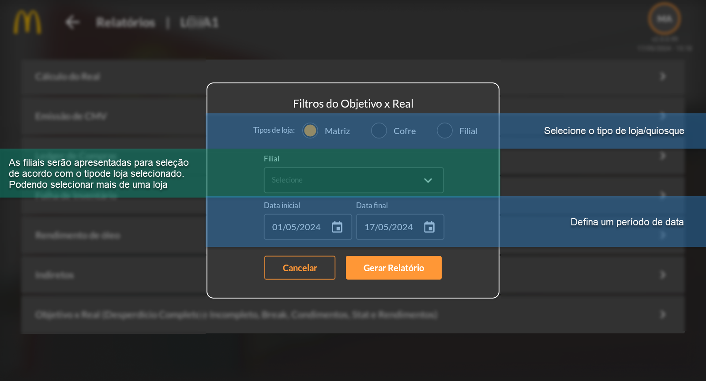
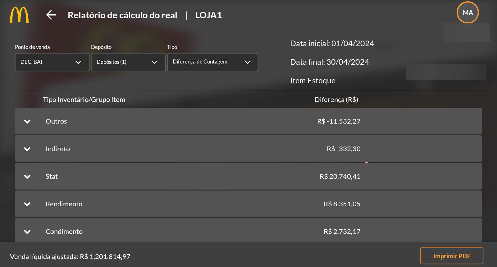
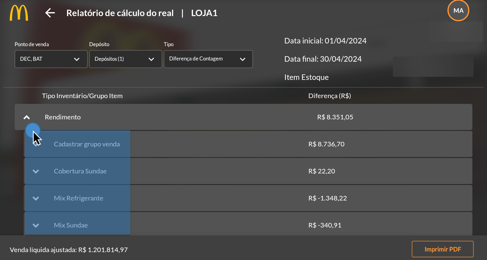
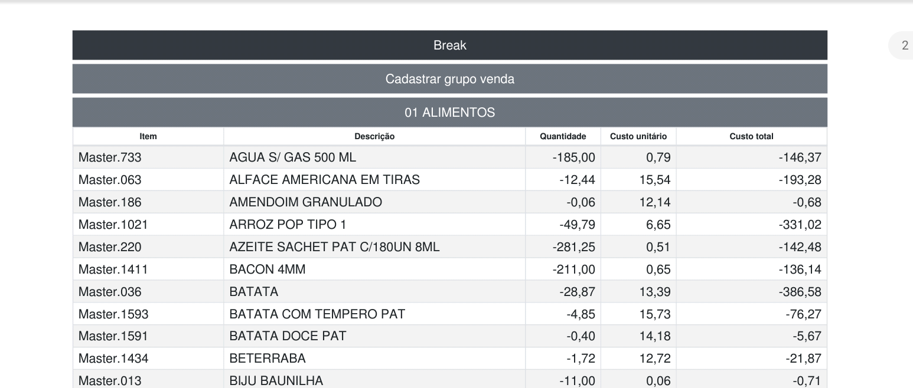

Objetivo x Real (Desperdício Completo, Incompleto, Break, Condimentos, Stat e Rendimentos)
O relatório de Objetivo x Real considera as informações cadastradas na aba Integração do cadastro de item no SAP em relação ao tipo de inventário. Neste relatório temos a informações dos itens classificados como Outros, Indireto, Stat, Rendimento e Condimento. Considerando o objetivo em relação ao real consumido.
 Ao clicar na seta ao lado da descrição do grupo de itens, é possível visualizar as informações do tipo de venda do item, agrupando-os desta forma para apresentar o resultado pelo grupo.
Ao clicar em “Imprimir PDF” será gerado um arquivo em PDF para impressão contendo as mesmas informações do aplicativo, assim como demonstra na imagem abaixo.
